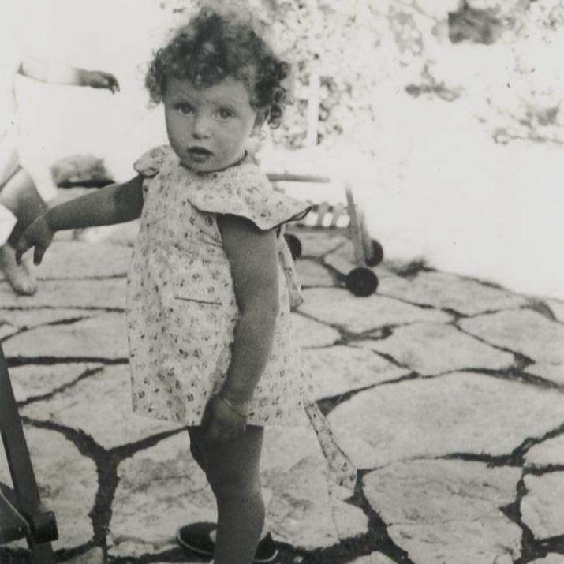

Portrait d’archive
Hariette Nordmann
Hariette NORDMANN
Hariette NORDMANN est née le 20/06/1941 à Paris en France.
Rassemblée à Lyon, elle est déportée à Auschwitz le 20/05/1944 par le convoi n°74 avec sa mère Lena Chaja Nordmann née WOLKOWITZ. Elle est morte en déportation.
Dernière adresse connue : 10, rue Duquesne 69006 (Lyon)
Nom : NORDMANN
Prénom(s) : Hariette
Date naissance : 20/06/1941
Âge (ans) : 2
Lieu naissance : Paris
Pays ou département : Seine
Lieu rassemblement : Lyon
Dernière adresse : 10, rue Duquesne
Ville : Lyon
Code postal : 69006
N° Convoi : 74
Date déportation : 20/05/1944
Informations diverses : déportée avec sa mère Chaja Nordmann née WOLKOWITZ (20/03/1910, Pabsainiz, Pologne) 34 ans et Lucie Nordmann née WERTHEIMER (30/11/1863, St. Julien) 81 ans, habitant 16, Rue de la République, Saint-Étienne.
Nordmann (Hariette), née le 20 juin 1941 à Paris 17e (Seine), décédée le 25 mai 1944 à Auschwitz (Pologne). JO
Nordmann, née Wolkowicz (Chaja) le 20 mars 1910 à Pabiani (Pologne), décédée le 15 octobre 1944 à Auschwitz (Pologne).
Lieu de déportation : Auschwitz
Lieu de départ : Drancy
Nombre total de déporté·e·s du convoi : 1200
Gazé·e·s à l'arrivée : 904 (75,3 %)
Survivant·e·s en 1945 : 166 (13,8 %)